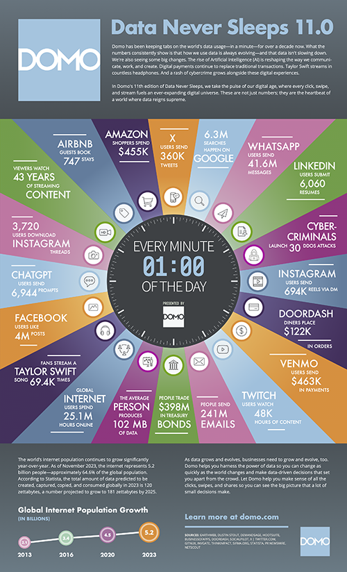
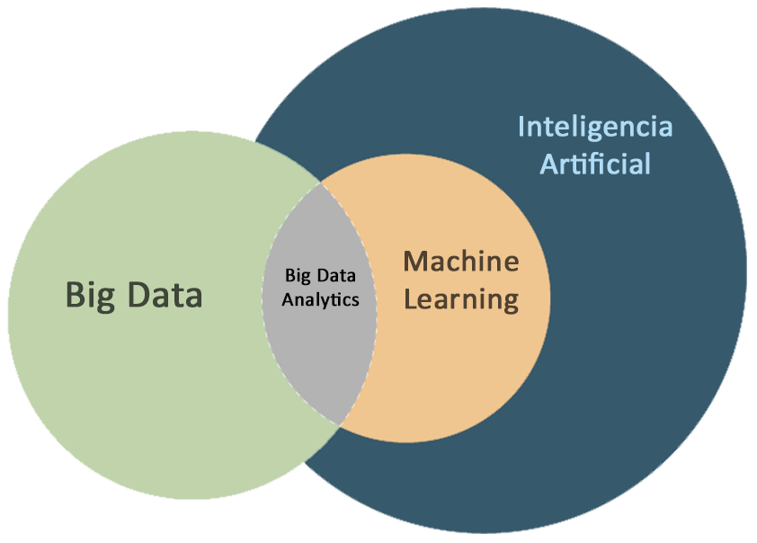

Tema 1. Introducción a Big Data
Lección 1: Definición y conceptos básicos de Big Data
DESCRIPCIÓN
Bienvenid@s a esta primera lección. El Big data se ha convertido en una herramienta imprescindible tanto para el ámbito público como el sector privado en todos los sectores ya que permite tomar decisiones fundamentadas a partir de los datos, analizando el impacto de éstos y extrayendo valor de los grandes volúmenes de datos disponibles hoy en día.
En esta lección haremos una breve introducción al término Big Data. Conoceremos su nacimiento y travesía a través de la historia. Hablaremos del concepto de 'dato' y el mundo de datos en el que nos estamos sumergiendo. Por último, aprenderemos a diferenciar entre los términos Big Data, Machine Learning e Inteligencia Artificial.
CONTENIDOS
¿Qué es el Big Data?
Podemos definir de manera sencilla el término Big Data como grandes conjuntos de datos de mayor complejidad y tamaño, especialmente procedente de nuevas fuentes de datos. Estos conjuntos de datos pueden ser estructurados, semiestructurados o no estructurados como veremos a lo largo de esta lección. La principal característica es que son tan voluminosos que el software de procesamiento convencional simplemente no es capaz de gestionarlos correctamente.
¿Breve historia del Big Data?
Aunque la idea de "Big Data" es bastante reciente, los orígenes de los datos masivos se remontan a los años 60 y 70, cuando estábamos apenas comenzando con los primeros centros de datos y las bases de datos más conocidas, las bases de datos relacionales.
En el 2005, la gente se dio cuenta de la locura de datos que estábamos generando en Facebook, YouTube y otras plataformas online. Fue entonces cuando salió a la luz Hadoop, un sistema abierto diseñado para guardar y analizar grandes cantidades de datos. También en esa época, las bases de datos NoSQL (No Solo SQL) hicieron sus primeras apariciones
Los frameworks de código abierto como Hadoop (y más recientemente, Spark) fueron clave para el boom del Big Data, haciendo que manejar y guardar esa montaña de datos fuera más fácil y barato. Desde entonces, la cantidad de datos ha crecido exponencialmente. Seguimos generando datos a gran velocidad, pero ahora no solo somos nosotros, ¡sino que hasta las máquinas están en el juego!
Con la llegada del Internet de las cosas (IoT), hay cada vez más objetos conectados a la red (que nos espían), recopilando datos sobre cómo usamos las cosas y el rendimiento de los productos. Y no podemos olvidar el auge del aprendizaje automático, que está generando aún más datos.
Aunque el Big Data ya ha recorrido un largo camino, su verdadero potencial apenas está despertando. La magia del Cloud Computing ha ampliado las posibilidades del Big Data. En la nube, los desarrolladores pueden escalar cosas de forma ágil y rápida. Además, las bases de datos de gráficos son cada vez más populares e importantes, mostrando toneladas de datos de forma rápida y completa.
Un mundo de datos
Pero... ¿de dónde se pueden sacar tantos datos? La respuesta la podemos encontrar si miramos atrás en el tiempo y al presente de frente. Cientos de empresas han ido recopilando datos de sus empleados, clientes, proyectos, etc. a lo largo de los años. Sin embargo, son los datos generados día a día por los usuarios los que le dan a esta tecnología toda su potencia.
Domo's presentó su 11ª edición de Data Never Sleeps, una infografía anual que nos muestra de forma general el inmenso volumen datos existente y su constante evolución.
“Los datos impulsan todo lo que hacemos, desde una búsqueda rápida en línea o enviar un correo electrónico, hasta consultar los últimos titulares de camino al trabajo. Data Never Sleeps, ahora en su undécimo año, muestra cuánto dependemos de los datos y su impacto en nuestra vida diaria en uno de los 525.600 minutos de un año”, dijo Josh James, fundador y director ejecutivo de Domo.

Fuente imagen: Data Never Sleeps 11
Tal como nos informa Domo's, la población mundial de Internet sigue creciendo de forma significativa año tras año. En noviembre de 2023, Internet representa 5.200 millones de personas, aproximadamente el 64,6% de la población mundial. No solo eso, sino que la cantidad total de datos que se preveía crear, capturar, copiar y consumir en todo el mundo en 2023 fue de 120 zettabytes, una cifra que se prevé que aumente hasta los 181 zettabytes en 2025.
*1 zettabyte = 1.000.000.000.000 gigabytes
|
 |
||
|
BIG DATA Almacenamiento y procesado de grandes volúmenes de datos |
MACHINE LEARNING Conjunto de algoritmos capaces de identificar y aprender patrones en los datos |
INTELIGENCIA ARTIFICIAL Resolver problemas mediante máquinas |
Diferencias entre Big Data, Machine Learning e Inteligencia Artificial
Como podemos observar en el gráfico, el machine learning está dentro de la inteligencia artificial, sin embargo, no toda inteligencia artifical es machine learning. De la misma forma podemos ver cómo el concepto de Big Data no está dentro de la inteligencia artificial, sino que tiene otras características. Sin embargo, aquella parte donde confluyen Machine Learning y Big data recibe el nombre de Big Data Analytics, un concepto relacionado con el dato puesto al servicio del entrenamiento de modelos con el fin de analizar patrones en los datos, predecir comportamientos, etc.
Big Data Analytics proporciona los datos que la IA y el ML necesitan para aprender y mejorar. La IA y el ML pueden utilizarse para analizar grandes conjuntos de datos y encontrar patrones y conocimiento oculto. Este conocimiento puede utilizarse para mejorar los procesos de negocio, desarrollar nuevos productos y servicios y tomar mejores decisiones. Podemos ver algunos ejemplos de cómo utilizar esta poderosa relación:
- Análisis de clientes: Al analizar los datos de sus clientes para comprender mejor sus necesidades y preferencias. Esta información puede utilizarse para desarrollar nuevos productos y servicios, mejorar la experiencia del cliente y aumentar las ventas.
- Detección de fraude: En el ámbito económico, al analizar las transacciones, se pueden extraer diferentes métricas y detectar así actividades fraudulentas, blanqueo de capitales, etc.
- Desarrollo de nuevos productos: Podemos identificar las distintas necesidades de los clientes y crear nuevos productos que las satisfagan. También en el ámbito de la fidelización de los clientes tiene un alto potencial.
EJERCICIO PROPUESTO
Enhorabuena! Has llegado al final de la primera lección. Ahora es tu turno. Como ejercicio práctico te proponemos investigar más en profundidad los orígenes del término "Big Data" e identificar aquellos eventos históricos importantes que lo han llegado a desarrollar.
Por último, trata de responder a esta pregunta: ¿Cómo se abordaban los problemas de almacenamiento, procesamiento, análisis y visualización de datos en el pasado, antes del desarrollo de Big data?